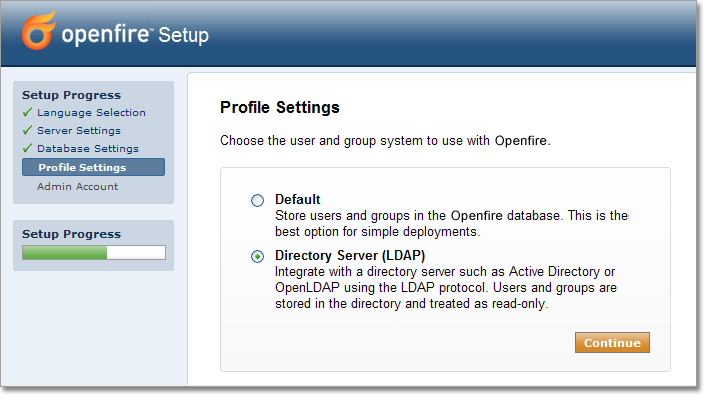

This document details how to configure your Openfire installation to use an external directory such as Open LDAP or Active Directory. Integration with a directory lets users authenticate using their directory username and password. Optionally, you can configure Openfire to load user profile and group information from the directory. Any group in Openfire can be designated as a shared group, which means that you can pre-populate user's rosters using directory groups.
LDAP (Lightweight Directory Access Protocol) has emerged as a dominant standard for user authentication and for storage of user profile data. It serves as a powerful tool for large organizations (or those organizations integrating many applications) to simplify user management issues. Many LDAP servers are available, such as Open LDAP, Active Directory, and Novell's eDirectory.
By default, Openfire stores all user data in its database and performs authentication using database lookups. The LDAP module replaces that functionality and allows Openfire to:
This document will guide you through configuring LDAP support in Openfire. These instructions assume that you're a competent LDAP user, and that you're familiar with Openfire setup issues.
The Openfire setup tool includes an easy to use LDAP setup wizard.
Choose the LDAP option on the Profile Settings page to configure directory integration.
The wizard along with in-line help will guide you through the rest of the process.
Specific tips for working with Active Directory are noted below.

If you have already completed the setup process but need to enable LDAP integration, you
can re-run the setup tool. To do so:
Microsoft's Active Directory is a broadly deployed directory system that supports the LDAP protocol. You'll be prompted for several LDAP fields when connecting to Active Directory servers, some of which are detailed below:
The base DN describes where to load users and groups. If you're using a default Active Directory setup, all user accounts and groups are located in the "Users" folder under your domain. In LDAP form, that's cn=Users;dc=<Your Domain>. To get more specific, say your domain is activedirectory.jivesoftware.com. In that case, your base DN would be cn=Users;dc=activedirectory,dc=jivesoftware,dc=com. If you've customized where users are stored, you'll just need to replicate that folder structure using LDAP syntax.
By default, Active Directory does not allow anonymous LDAP connections. Therefore, you'll need to enter the DN of a user that's allowed to connect to the server and read all user and group data. Unless you've created a special user account for this purpose, an easy choice is to use the built-in administrator account. By default, the administrator DN is in the form cn=Administrator,dc=<Your Domain>. Using our previous example, cn=Administrator,cn=users,dc=activedirectory,dc=jivesoftware,dc=com.
If you prefer to edit the configuration file to enable LDAP integration directly, use the following instructions. Open the configuration file conf/openfire.xml from your Openfire installation in your favorite editor and add or change the following settings. Properties flagged with ( *) must be set. Properties flagged with (**) must be set in order to enable LDAP group support, all other properties are optional:
Below is a sample config file section:
<jive>
...
<ldap>
<host></host>
<port>389</port>
<usernameField>uid</usernameField>
<nameField>cn</nameField>
<emailField>mail</emailField>
<baseDN>ou=People;dc=example;dc=com</baseDN>
<adminDN>cn=Directory Administrator</adminDN>
<adminPassword></adminPassword>
</ldap>
<provider>
<user>
<className>org.jivesoftware.openfire.ldap.LdapUserProvider</className>
</user>
<auth>
<className>org.jivesoftware.openfire.ldap.LdapAuthProvider</className>
</auth>
<group>
<className>org.jivesoftware.openfire.ldap.LdapGroupProvider</className>
</group>
</provider>
...
</jive>
You'll most likely want to change which usernames are authorized to login to the admin console. By default, only the user with username "admin" is allowed to login. However, you may have different users in your LDAP directory that you'd like to be administrators. The list of authorized usernames is controlled via the admin.authorizedUsernames property. For example, to let the usersnames "joe" and "jane" login to the admin console:
<jive>
...
<admin>
...
<authorizedUsernames>joe, jane</authorizedUsernames>
</admin>
...
</jive>
By default, Openfire will load all objects under the baseDN that have the attribute specified by ldap.usernameField. In the case that the username field is set to "uid", the search for all users would be "(uid=*)". However, there are cases when this logic does not work -- for example, when a directory contains other objects besides users but all objects share "uid" as a unique identifier field. In that case, you may need to specify a custom search filter using ldap.searchFilter. As an example, a search filter for all users with a "uid" and a "cn" value of "joe" would be:
(&(uid={0})(cn=joe))
The "{0}" value in the filter above is a token that should be present in all custom search filters. It will be dynamically replaced with "*" when loading the list of all users or a username when loading a single user.
Some custom search filters may include reserved XML entities such as "&". In that case, you must enter the search filter into the openfire.xml file using CDATA:
<searchFilter><![CDATA[(&(sAMAccountName={0})(|(givenName=GEORGE)(givenName=admin)))]]></searchFilter>
Some LDAP servers or application servers may require that a different LDAP initial context factory be used rather than the default (com.sun.jndi.ldap.LdapCtxFactory). You can set a custom initial context factory by adding the following to openfire.xml:
<ldap>
... other ldap settings here
<initialContextFactory>com.foo.factoryClass</initialContextFactory>
</ldap>
The default LDAP provider (Sun's) support pooling of connections to the LDAP
server. Connection pooling can greatly improve performance, especially on
systems with high load. Connection pooling is enabled by default, but can
be disabled by setting the Jive property ldap.connectionPoolEnabled
to false:
<ldap>
... other ldap settings here
<connectionPoolEnabled>false</connectionPoolEnabled>
</ldap>
You should set several Java system properties to change default pool settings. For more information, see the following pages:
Note that if you turn on LDAP debugging, connection pooling will not be enabled. If SSL LDAP mode is enabled, you must set a system property to enable pooling of SSL LDAP connections.
The LDAP vCard provider will expose LDAP profile information as vCard data for XMPP clients that support the XMPP vCard extension. First, enable the provider:
<provider>
...
<vcard>
<className>org.jivesoftware.openfire.ldap.LdapVCardProvider</className>
</vcard>
...
</provider>
Next, you must add mappings between LDAP fields and vCard fields in the openfire.xml file. The vcard attributes are configured by adding an attrs="attr1,attr2" attribute to the vcard elements. Arbitrary text can be used for the element values as well as MessageFormat style placeholders for the ldap attributes. For example, if you wanted to map the LDAP attribute displayName to the vcard element FN, the XML snippet would be: <FN attrs="displayName">{0}</FN>
The vCard XML must be escaped in CDATA and must also be well formed. It is the exact XML this provider will send to a client after after stripping attr attributes and populating the placeholders with the data retrieved from LDAP. This system should be flexible enough to handle any client's vCard format. An example mapping follows.
<ldap>
<vcard-mapping>
<![CDATA[
<vCard xmlns='vcard-temp'>
<FN>{displayName}</FN>
<NICKNAME>{uid}</NICKNAME>
<BDAY>{dob}</BDAY>
<ADR>
<HOME/>
<EXTADR>Ste 500</EXTADR>
<STREET>317 SW Alder St</STREET>
<LOCALITY>Portland</LOCALITY>
<REGION>Oregon</REGION>
<PCODE>97204</PCODE>
<CTRY>USA</CTRY>
</ADR>
<TEL>
<HOME/>
<VOICE/>
<NUMBER>{telephoneNumber}</NUMBER>
</TEL>
<EMAIL>
<HOME/>
<INTERNET/>
<PREF/>
<USERID>{mail}</USERID>
</EMAIL>
<TITLE>{title}</TITLE>
<ROLE></ROLE>
<ORG>
<ORGNAME>{o}</ORGNAME>
<ORGUNIT></ORGUNIT>
</ORG>
<URL>{labeledURI}</URL>
<DESC>uid: {uidNumber} home: {homeDirectory} shell: {loginShell}</DESC>
</vCard>
]]>
</vcard-mapping>
</ldap>
Can I create new users through Openfire when using LDAP?